Belinda Bleeker's Assignment 3!
First for this assignment I had to set-up my 3D-Printer. That took about an hour and 40 minutes. I watched the tutorial video first and afterwords put it together, getting a baseline for everything first helped. Then I set out to actually put it together. I got lucky my bed was secure, and the extruder didn't wiggle from the start.


Once I finished assembling everything (pleasae ignore the mess), I moved it to a desk and checked every bolt was secure. With that complete I did a little shake test (the desk was somewhat unstable), and it passed with flying colors.
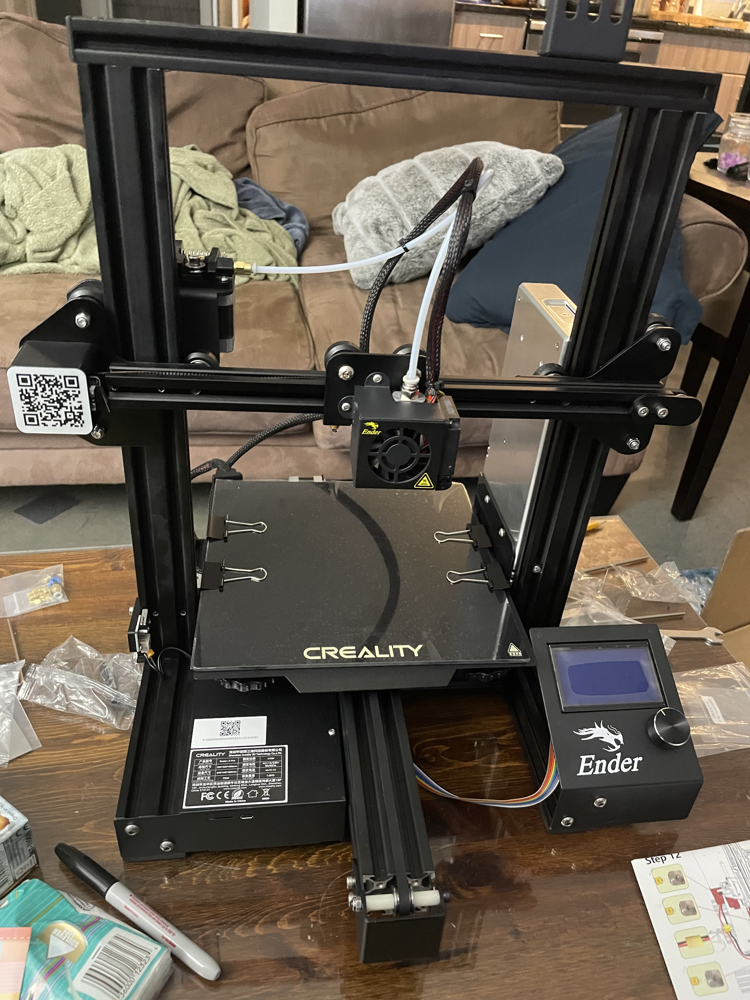
 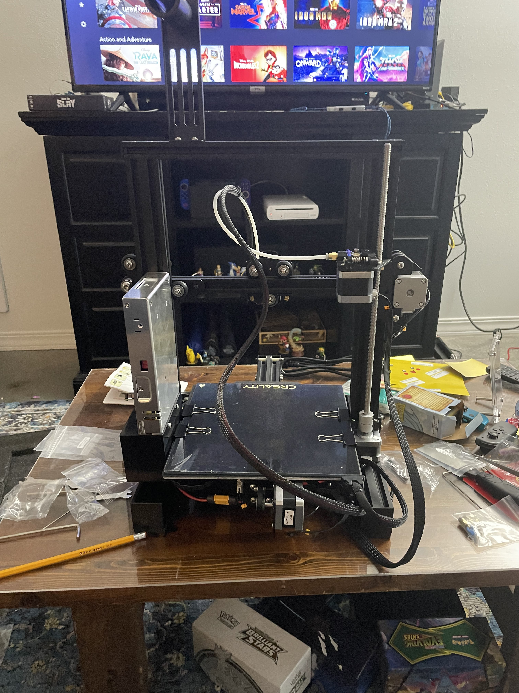
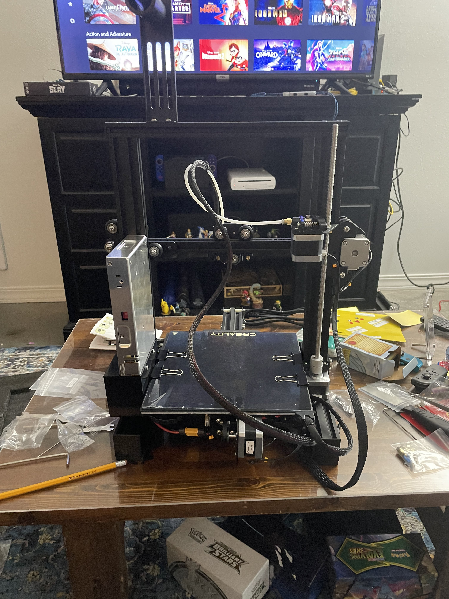
Next was to level the bed. Oh boy, was this a pain. The back left skrew was initially jammed and I think I spent over an hour testing again and again until it was level. Here is the proof of my long and tedious work.

 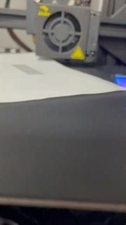
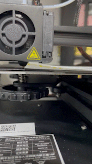
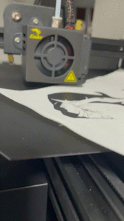
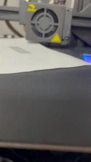
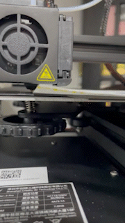
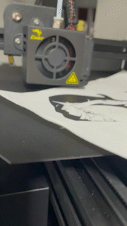
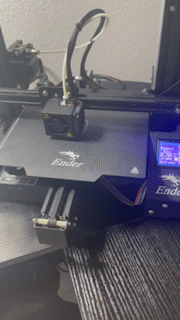
On to part 2, the cubes. I foolishly made my first file in CM, as the measurements were asked in CM. There I made a 2x2 square and extruded it by 2. Once I realized Cura worked in MM I changed the file units to MM so the cube was 20x20x20.
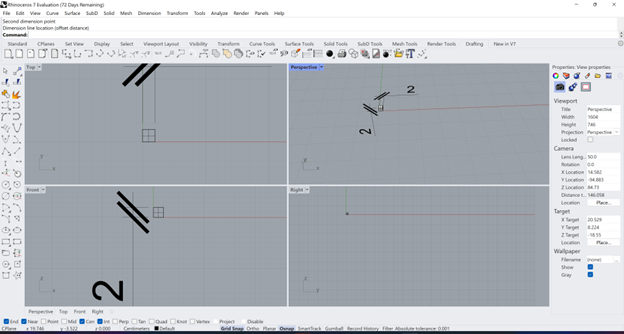 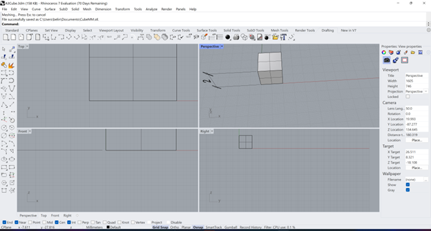
With that finished I moved to Cura and created the Gcodes. One Low Quality, one Standard Quality, one Super Quality, and one Standard Quality with a concentric top and bottom. Below are the prints with the times and measurements on the sticky note attached.
Power: 20%, Speed: 15%, PPI: 300, Z-Axis 0.165” Vector Performance: Quality, Throughout.
Material: General Soft Wood and Material Thickness: 0.165”
Total time took about 7 and a half minutes.
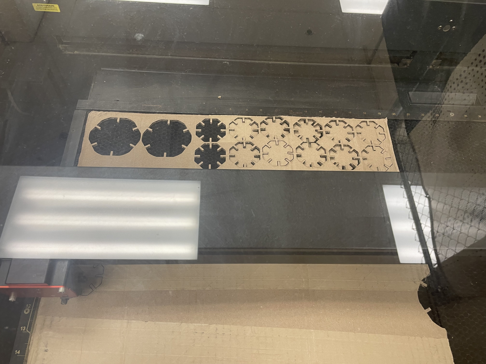
Here is the final shake test.

Documentation:
Acknowledgements
Junchao for helping me figure out how to connect the circle and line parts to make a full shape in Grasshopper.
The 8 staff for helping me when the laser got stuck in an odd spot. (Turning it off and on again so simple, yet so universal)
And my friend Dana for helping me put this site together
Return to index